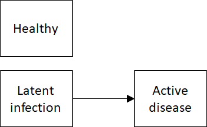

The goal of EvidSynthTB is to use Bayesian Multi-Parameter Evidence Synthesis (MPES) in CmdStan to jointly or modularly estimate latent tuberculosis infection (LTBI) prevalence (\(\pi\)), imperfect diagnostic test sensitivity and specificity (\(\text{sens}, \text{spec}\)), and active TB progression hazard rates (\(\lambda, \text{shape}\)) via parametric mixture cure models.
Model Structure
The framework links two core epidemiological modules:
- Starting state occupancy & imperfect diagnostic testing (\(M_1\)): True baseline LTBI status \(Z_i \sim \text{Bernoulli}(\pi_i)\) is observed only through \(K \ge 1\) imperfect diagnostic tests (e.g., IGRA, TST) with sensitivity \(\text{sens}_k\) and specificity \(\text{spec}_k\): \[p_{\text{pos}, i, k} = \pi_i \, \text{sens}_k + (1 - \pi_i)(1 - \text{spec}_k)\]
-
Active TB progression mixture cure model (\(M_2\)): Only truly infected individuals (\(Z_i = 1\), uncured fraction \(\pi_i\), or positive predictive value \(\text{PPV}_i\) in a test-positive follow-up cohort) are at risk of progressing to active TB with uncured survival \(S_u(t)\) and density \(f_u(t)\) (
"gompertz","weibull", or"exponential"): \[L_{\text{surv}, i} = \left[ \tilde{\pi}_i f_u(t_i) \right]^{d_i} \left[ (1 - \tilde{\pi}_i) + \tilde{\pi}_i S_u(t_i) \right]^{1 - d_i}\]

Six Synthesis & Modular Feedback Strategies
evidsynth_fit() and compare_evidsynth() support six ways of sharing or cutting information between the LTBI diagnostic module and the active TB progression module:
-
"joint": Full joint likelihood (\(\pi_{\text{diag}} = \pi_{\text{surv}}\)), supporting both"population"coupling and individual-level"latent_class"marginalization over \(Z_i \in \{0, 1\}\). -
"cut": True two-stage Bayesian cut model (Plummer 2015). Stage 1 fitsltbi_module.stanon diagnostic/survey data alone; Stage 2 propagates Stage 1 posterior draws into the progression mixture cure model while blocking feedback from survival data back into LTBI prevalence. -
"independent": Separate unlinked prevalence parameters \(\pi_{\text{diag}}\) and \(\pi_{\text{surv}}\). -
"melding": Two-stage normal portal plug-in (\(\hat{\mu}, \hat{\sigma}\) on \(\text{logit}(\pi)\)). -
"elastic": Hierarchical coupling \(\text{logit}(\pi_{\text{surv}}) \sim \mathcal{N}(\text{logit}(\pi_{\text{diag}}), \tau^2)\) with tuneabletau_couple. -
"tempered": Power-likelihood tempering weighting the survival contribution byw_temper\(\in [0, 1]\).
Examples
1. Simulated Conflict Scenario (Imperfect Tests + Cut vs. Joint Models)
library(EvidSynthTB)
# Simulate survey with true LTBI prevalence = 0.25, but a progression cohort
# with selection bias (true LTBI prevalence = 0.65) and imperfect IGRA test
sim <- create_fake_data(
N_surv = 400,
n_survey = 1500,
p_ltbi = 0.25,
p_ltbi_surv = 0.65,
sens = 0.85,
spec = 0.95,
surv_dist = "gompertz",
shape = 0.1,
rate = 0.12,
seed = 42
)
comp <- compare_evidsynth(
prevalence_data = sim$prevalence_data,
progression_data = sim$progression_data[, c("t", "d")],
models = c("joint", "cut", "independent", "elastic", "tempered"),
imperfect_test = TRUE
)
comp$summary_table
plot_model_comparison(comp, truth = c(prev_diag = 0.25, lambda = 0.12, shape = 0.1))
plot_survival_comparison(comp)2. Reconstructed Abubakar (2018) UK PREDICT-TB Data
abub <- load_abubakar_2018()
fit_abub <- evidsynth_fit(
prevalence_data = abub$prevalence_data,
progression_data = abub$progression_data,
model = "cut",
imperfect_test = TRUE
)
fit_abub$summary
plot_progression(fit_abub)3. Individual-Level Linked PREDICT-TB Migrant Cohort
migrant <- load_predict_migrant()
fit_migrant <- evidsynth_fit(
prevalence_data = migrant$prevalence_data,
progression_data = migrant$progression_data,
model = "joint",
coupling = "latent_class",
imperfect_test = TRUE,
covariates = "age_z"
)
fit_migrant$summary